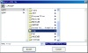

2006年08月08日 文責：浅岡 浩子
もくじ：
ビューファインダは、３次元オブジェクトを表示します。
回転、拡大・縮小、平行移動、選択などもできます。
ビューファインダを開くには、「 分子ビューア 」などで 「Misc」->「Viewfinder」メニューを選択します。
ビューファインダの画面は以下のようになっています。
ビューアのウィンドウ操作 で見る方向や範囲を変更できます。
ウィンドウの上部にあるメニューです。
|
|
|
|
ビューアに表示されている状態の画像ファイルを作成します。
「 Molecular Viewer 」の 「 Save as Image 」と同様の処理になります。
ただし、デフォルトのファイル名は、[元のオブジェクト名]_[年月日時分秒].jpgです。
ビューアに表示されている状態のVRMLファイルを作成します。
VRMLファイル（*.wrl）を入力するダイアログが現れます。
ファイル名を入力して「Accept」ボタンを押します。
デフォルトのファイル名は、[元のオブジェクト名]_[年月日時分秒].wrlです。
--(Save as VRML)--> 
作成した場所を忘れないようにしましょう。
phe_yyyymmddhhmmss.wrl: 保存される VRML ファイルのサンプル
VRML ファイルを利用して、ウェブブラウザでも ３Ｄオブジェクトを動かすことができます。
Cortona VRML Client のインストールが必要になります。
下記の場所から、ダウンロードしてインストールしてください。
http://www.parallelgraphics.com/products/cortona/
ウィンドウを閉じます。
このウィンドウに関連した、ビューポートのウィンドウも同時に閉じます。
|
|
ビューア内に表示しているものの全体が見られます。
「 Molecular Viewer 」の 「 Reset 」と同様の処理になります。
|
|
右隣に、同じ状態のウィンドウが開きます。
開いているウィンドウのコピーを作り出すときに利用すると良いでしょう。
右隣にビューポートのウィンドウが開きます。
「 Molecular Viewer 」の 「 Viewport 」と同様の処理になります。
このメニューは、ランタイム版では選択することができません。
開発時にプログラムの状態などを確認するためのメニューです。
選択可能な場合は、インスペクターが開きます。
{kind=link}
{kind=link}
{kind=link}
{kind=link}
{kind=link}